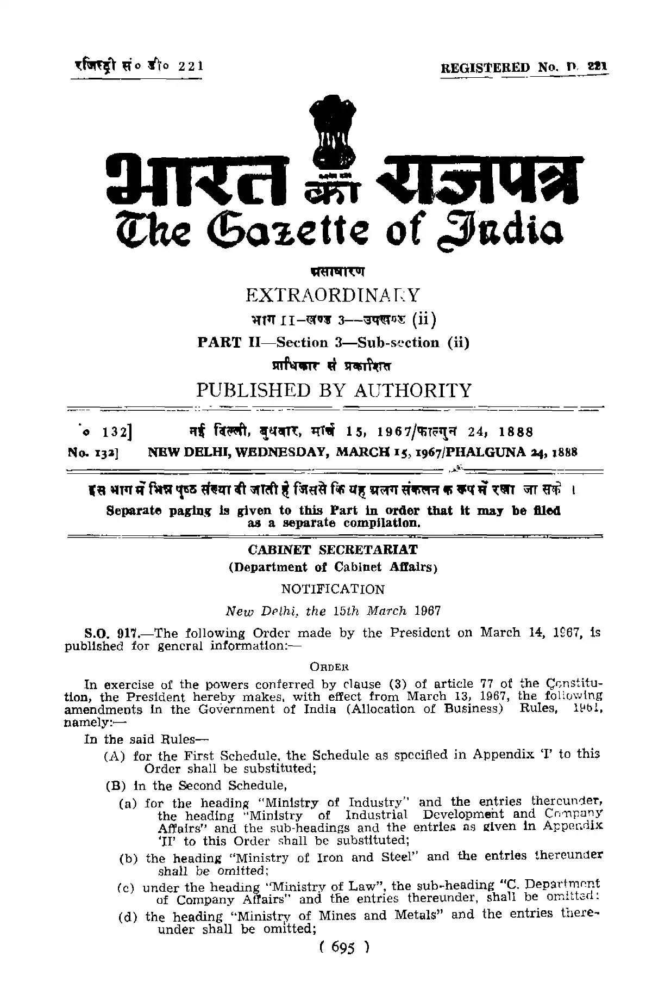
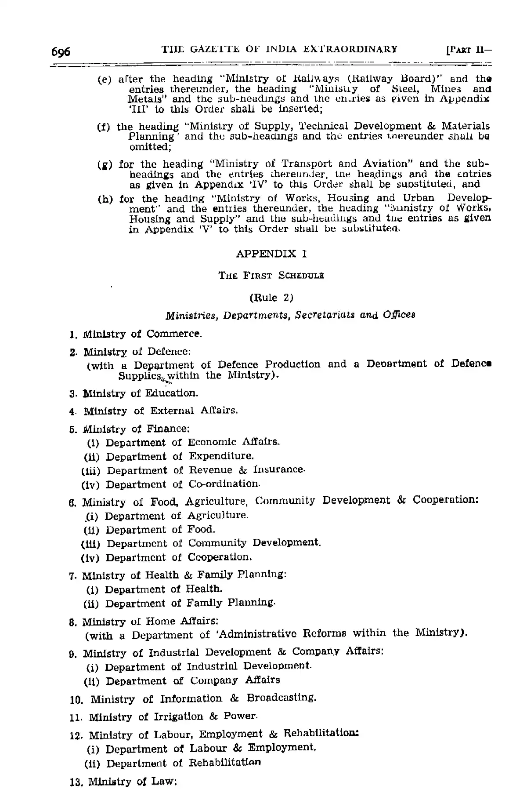
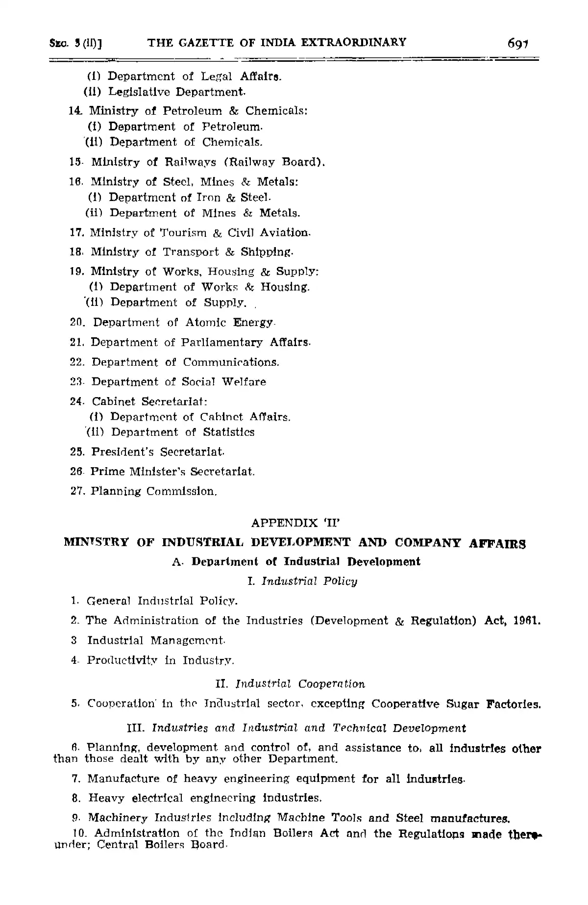
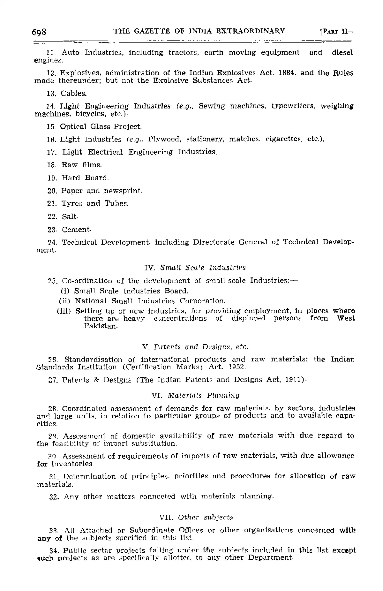
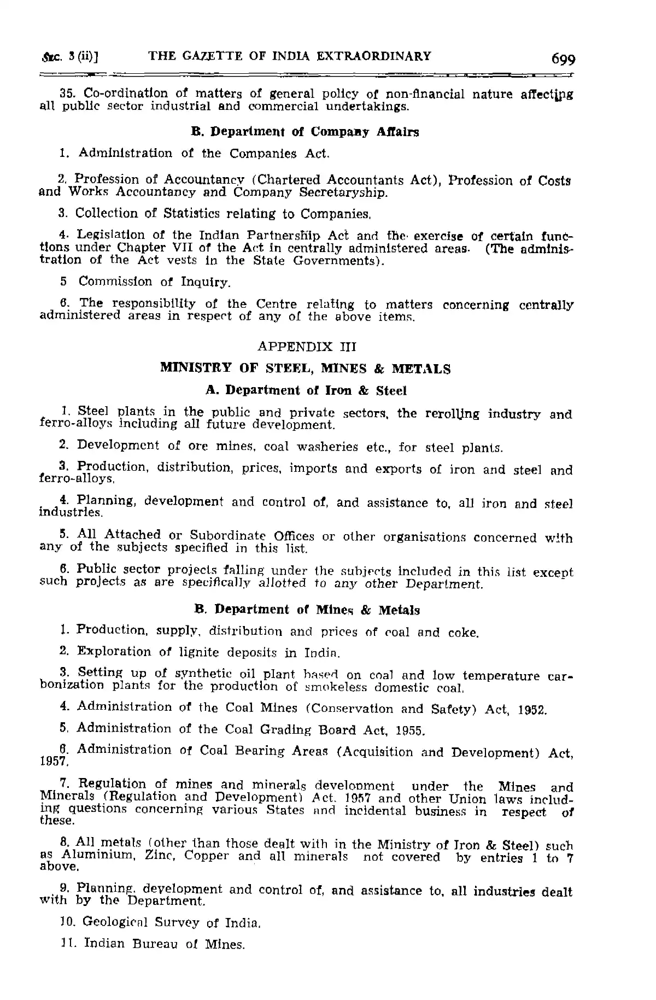
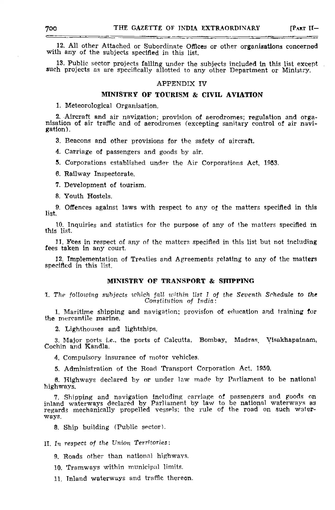
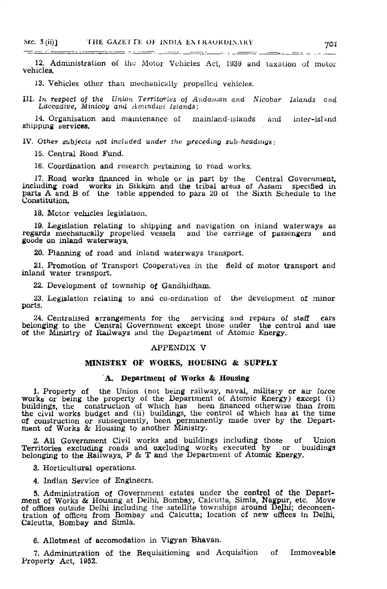
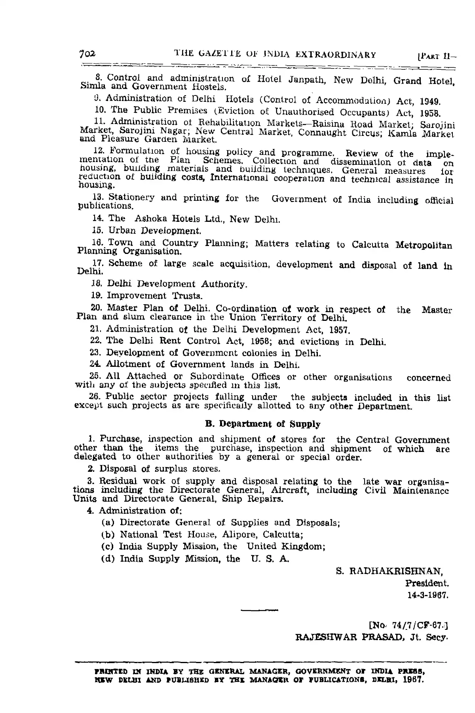

Amendment #58 (S.O. 917, 1967)
9 changes: 1 to the First Schedule, 8 to the Second Schedule. 9 applied
What it did to the ministries
- splitMinistry of Supply, Technical Development & Materials Planning splits into Ministry of Industrial Development & Company Affairs (6) and Ministry of Works, Housing & Supply (4) change 2, 6, 8, 9 · histories: Supply, Technical Development & Materials Planning, Industry, Supply
- splitMinistry of Transport and Aviation splits into Ministry of Transport & Shipping (24) and Ministry of Tourism & Civil Aviation (12) change 8 · histories: Transport and Aviation, Shipping and Transport, Tourism and Civil Aviation
- mergedMinistry of Mines and Metals and Ministry of Iron and Steel merge into Ministry of Steel, Mines & Metals change 3, 5, 6 · histories: Mines and Metals, Iron and Steel, Steel, Mines & Metals
- renamedMinistry of Industry is renamed Ministry of Industrial Development & Company Affairs change 2 · histories: Industry
- renamedMinistry of Works, Housing and Urban Development is renamed Ministry of Works, Housing & Supply change 8, 9 · histories: Supply
The order, page by page
Page 1 of 8

12345Schedule 1
- THE FIRST SCHEDULE (Rule 2) Ministries, Departments, Secretariats and Offices
- 1. Ministry of Commerce.
- 2. Ministry of Defence
- -. Department of Defence Production
- -. Department of Defence Supplies
- 3. Ministry of Education.
and 39 more
- 4. Ministry of External Affairs.
- 5. Ministry of Finance: (1) Department of Economic Affairs.
- ii. Department of Expenditure.
- iii. Department of Revenue & Insurance.
- iv. Department of Co-ordination.
- 6. Ministry of Food, Agriculture, Community Development & Cooperation:
- i. Department of Agriculture.
- i. Department of Food.
- iii. Department of Community Development.
- iv. Department of Cooperation.
- 7. Ministry of Health & Family Planning: (1) Department of Health.
- ii. Department of Family Planning.
- 8. Ministry of Home Affairs
- -. Department of ‘Administrative Reforms
- 9. Ministry of Industrial Development & Company Affairs:
- i. Department of Industrial Development. (11) Department of Company Affairs
- 10. Ministry of Information & Broadcasting.
- 11. Ministry of Irrigation & Power.
- 12. Ministry of Labour, Employment & Rehabilitation:
- i. Department of Labour & Employment.
- ii. Department of Rehabilitation
- 13. Ministry of Law: SEC. 3 (II)] (1) Department of Legal Affairs.
- ii. Legislative Department.
- 14. Ministry of Petroleum & Chemicals:
- f. Department of Petroleum. (1) Department of Chemicals.
- 15. Ministry of Railways (Railway Board)
- 16. Ministry of Steel, Mines & Metals: (1) Department of Iron & Steel.
- ii. Department of Mines & Metals.
- 17. Ministry of Tourism & Civil Aviation.
- 18. Ministry of Transport & Shipping.
- 19. Ministry of Works, Housing & Supply: (1) Department of Works & Housing. (11) Department of Supply.
- 20. Department of Atomic Energy.
- 21. Department of Parliamentary Affairs.
- 22. Department of Communications.
- 23. Department of Social Welfare
- 24. Cabinet Secretariat: (1) Department of Cabinet Affairs. (11) Department of Statistics
- 25. President's Secretariat.
- 26. Prime Minister's Secretariat.
- 27. Planning Commission.
applied at schedule 1 in the Rules after #58
read hindi missing, read page break
Schedule 2 › Ministry of Industry
- MINISTRY OF INDUSTRIAL DEVELOPMENT AND COMPANY AFFAIRS
- A. Department of Industrial Development
- I. Industrial Policy
- 1. General Industrial Policy.
- 2. The Administration of the Industries (Development & Regulation) Act, 1961.
- 3. Industrial Management.
and 45 more
- 4. Productivity in Industry.
- II. Industrial Cooperation
- 5. Cooperation In the Industrial sector, excepting Cooperative Sugar Factories.
- III. Industries and Industrial and Technical Development
- 6. Planning, development and control of, and assistance to, all industries other than those dealt with by any other Department.
- 7. Manufacture of heavy engineering equipment for all industries.
- 8. Heavy electrical engineering industries.
- 9. Machinery Industries Including Machine Tools and Steel manufactures.
- 10. Administration of the Indian Boilers Act and the Regulations made thereunder; Central Boilers Board.
- 11. Auto Industries, Including tractors, earth moving equipment and diesel engines.
- 12. Explosives, administration of the Indian Explosives Act, 1884, and the Rules made thereunder; but not the Explosive Substances Act.
- 13. Cables.
- 14. Light Engineering Industries (e.g., Sewing machines, typewriters, weighing machines, bicycles, etc.).
- 15. Optical Glass Project
- 16. Light Industries (e.g., Plywood, stationery, matches, cigarettes, etc.).
- 17. Light Electrical Engineering Industries.
- 18. Raw Alms.
- 19. Hard Board.
- 20. Paper and newsprint.
- 21. Tyres and Tubes.
- 22. Salt.
- 23. Cement.
- 24. Technical Development, including Directorate General of Technical Development.
- IV. Small Scale Industries
- 25. Co-ordination of the development of small-scale Industries:— (1) Small Scale Industries Board. () National Small Industries Corporation. (1) Setting up of new industries, for providing employment, in places where there are heavy concentrations of displaced persons from West Pakistan.
- V. Patents and Designs, etc.
- 26. Standardisation of international products and raw materials; the Indian Standards Institution (Certification Marks) Act. 1952.
- 27. Patents & Designs (The Indian Patents and Designs Act, 1911).
- VI. Materials Planning
- 28. Coordinated assessment of demands for raw materials, by sectors. Industries and large units, in relation to particular groups of products and to available capacities.
- 29. Assessment of domestic availability of raw materials with due regard to the feasibility of import substitution.
- 30. Assessment of requirements of imports of raw materials, with due allowance for inventories.
- 31. Determination of principles, priorities and procedures for allocation of raw materials.
- 32. Any other matters connected with materials planning.
- VII. Other subjects
- 33. All Attached or Subordinate Offices or other organisations concerned with any of the subjects specified in this Ust.
- 34. Public sector projects falling under the subjects included in this list except such projects as are specifically allofted to any other Department.
- 35. Co-ordination of matters of general policy of non-financial nature affecting all public sector industrial and commercial undertakings.
- B. Department of Company Affairs
- 1. Administration of the Companies Act.
- 2. Profession of Accountancy (Chartered Accountants Act), Profession of Costs and Works Accountancy and Company Secretaryship.
- 3. Collection of Statistics relating to Companies.
- 4. Legislation of the Indian Partnership Act and the exercise of certain functions under Chapter VII of the Act in centrally administered areas. (The administration of the Act vests in the State Governments).
- 5. Commission of Inquiry.
- 6. The responsibility of the Centre relating to matters concerning centrally administered areas in respect of any of the above items.
applied at schedule 2 › ministry Ministry of Industry in the Rules after #58
read hindi missing, read page break
Schedule 2 › Ministry of Iron and Steel
applied at schedule 2 › ministry in the Rules after #58
Schedule 2 › Ministry of Law › Department of Company Affairs
applied at schedule 2 › ministry MINISTRY OF LAW. › department C in the Rules after #58
Schedule 2 › Ministry of Mines and Metals
applied at schedule 2 › ministry in the Rules after #58
Page 2 of 8

6789after Schedule 2 › Ministry of Railways (Railway Board)
- MINISTRY OF STEEL, MINES & METALS
- A. Department of Iron & Steel
- 1. Steel plants in the public and private sectors, the rerolling industry and ferro-alloys including all future development.
- 2. Development of ore mines, coal washeries etc., for steel plants.
- 3. Production, distribution, prices, imports and exports of iron and steel and ferro-alloys.
- 4. Planning, development and control of, and assistance to, all iron and steel industries.
and 17 more
- 5. All Attached or Subordinate Offices or other organisations concerned with any of the subjects specified in this list.
- 6. Public sector projects falling under the subjects included in this list except such projects as are specifically allotted to any other Department.
- B. Department of Mines & Metals
- 1. Production, supply, distribution and prices of coal and coke.
- 2. Exploration of lignite deposits in India.
- 3. Setting up of synthetic oil plant based on coal and low temperature carbonization plants for the production of smokeless domestic coal.
- 4. Administration of the Coal Mines (Conservation and Safety) Act, 1952.
- 5. Administration of the Coal Grading Board Act, 1955.
- 6. Administration of Coal Bearing Areas (Acquisition and Development) Act
- 1957.
- 7. Regulation of mines and minerals development under the Mines and Minerals (Regulation and Development) Act. 1957 and other Union laws including questions concerning various States and incidental business in respect of these.
- 8. All metals (other than those dealt with in the Ministry of Iron & Steel) such as Aluminium, Zinc, Copper and all minerals not covered by entries 1 to 7 above.
- 9. Planning, development and control of, and assistance to, all industries dealt with by the Department.
- 10. Geological Survey of India.
- 11. Indian Bureau of Mines.
- 12. All other Attached or Subordinate Offices or other organisations concerned with any of the subjects specified in this list.
- 13. Public sector projects falling under the subjects included in this list except such projects as are specifically allotted to any other Department or Ministry.
applied at schedule 2 › ministry MINISTRY OF STEEL, MINES & METALS in the Rules after #58
read hindi missing, read page break
Schedule 2 › Ministry of Supply, Technical Development & Materials Planning
applied at schedule 2 › ministry in the Rules after #58
Schedule 2 › Ministry of Transport and Aviation
- MINISTRY OF TOURISM & CIVIL AVIATION
- 1. Meteorological Organisation.
- 2. Aircraft and air navigation; provision of aerodromes; regulation and organisation of air traffic and of aerodromes (excepting sanitary control of air navigation).
- 3. Beacons and other provisions for the safety of aircraft.
- 4. Carriage of passengers and goods by air.
- 5. Corporations established under the Air Corporations Act, 1953.
and 36 more
- 6. Railway Inspectorate.
- 7. Development of tourism.
- 8. Youth Hostels.
- 9. Offences against laws with respect to any of the matters specifled in this list.
- 10. Inquiries and statistics for the purpose of any of the matters specified in this list.
- 11. Fees in respect of any of the matters specifled in this list but not including fees taken in any court.
- 12. Implementation of Treaties and Agreements relating to any of the matters specified in this list.
- MINISTRY OF TRANSPORT & SHIPPING
- I. The following subjects which fall within list I of the Seventh Schedule to the Constitution of India:
- 1. Maritime shipping and navigation; provision of education and training for the mercantile marine.
- 2. Lighthouses and lightships.
- 3. Major ports i.e., the ports of Calcutta, Bombay, Madras, Visakhapatnam Cochin and Kandla.
- 4. Compulsory insurance of motor vehicles.
- 5. Administration of the Road Transport Corporation Act, 1950.
- 6. Highways declared by or under law made by Parliament to be national highways.
- 7. Shipping and navigation including carriage of passengers and goods on inland waterways declared by Parliament by law to be national waterways as regards mechanically propelled vessels; the rule of the road on such waterways.
- 8. Ship building (Public sector).
- II. In respect of the Union Territories :
- 9. Roads other than national highways
- 10. Tramways within municipal limits.
- 11. Inland waterways and traffic thereon. -.:--
- 12. Administration of the Motor Vehicles Act, 1939 and taxation of motor vehicles.
- 13. Vehicles other than mechanically propelled vehicles.
- III. In respect of the Union Territories of Andaman and Nicobar Islands and Laccadive, Minicoy and Amindwi Islands:
- 14. Organisation and maintenance of mainland-islands and inter-island shipping services.
- IV. Other subjects not included under the preceding sub-headings :
- 15. Central Road Fund.
- 16. Coordination and research pertaining to road works.
- 17. Road works financed in whole or in part by the Central Government including road works in Sikkim and the tribal areas of Assam specified in parts A and B of the table appended to para 20 of the Sixth Schedule to the Constitution.
- 18. Motor vehicles legislation.
- 19. Legislation relating to shipping and navigation on inland waterways as regards mechanically propelled vessels and the carriage of passengers and goods on inland waterways.
- 20. Planning of road and inland waterways transport.
- 21. Promotion of Transport Cooperatives in the field of motor transport and inland water transport.
- 22. Development of township of Gandhidham.
- 23. Legislation relating to and co-ordination of the development of minor ports.
- 24. Centralised arrangements for the servicing and repairs of staff cars belonging to the Central Government except those under the control and use of the Ministry of Railways and the Department of Atomic Energy.
applied at schedule 2 › ministry MINISTRY OF TRANSPORT AND AVIATION in the Rules after #58
read hindi missing, read page break
Schedule 2 › Ministry of Works, Housing and Urban Development
- MINISTRY OF WORKS, HOUSING & SUPPLY
- A. Department of Works & Housing
- 1. Property of the Union (not being railway, naval, military or air force works or being the property of the Department of Atomic Energy) except (i) buildings, the construction of which has been financed otherwise than from the civil works budget and (li) buildings, the control of which has at the…
- 2. All Government Civil works and buildings including those of Union Territories excluding roads and excluding works executed by or buildings belonging to the Railways, P & T and the Department of Atomic Energy.
- 3. Horticultural operations.
- 4. Indian Service of Engineers.
and 31 more
- 5. Administration of Government estates under the control of the Department of Works & Housing at Delhi, Bombay, Calcutta, Simla, Nagpur, etc. Move of offices outside Delhi including the satellite townships around Delhi; deconcentration of offices from Bombay and Calcutta; location of new offices in…
- 6. Allotment of accomodation in Vigyan Bhavan.
- 7. Administration of the Requisitioning and Acquisition of Immoveable Property Act, 1952.
- 8. Control and administration of Hotel Janpath, New Delhi, Grand Hotel Simla and Government Hostels
- 9. Administration of Delhi Hotels (Control of Accommodation) Act, 1949.
- 10. The Public Premises (Eviction of Unauthorised Occupants) Act, 1958.
- 11. Administration of Rehabilitation Markets—Raisina Road Market; Sarojini Market, Sarojini Nagar; New Central Market, Connaught Circus; Kamla Market and Pleasure Garden Market.
- 12. Formulation of housing policy and programme. Review of the implementation of the Plan Schemes, Collection and dissemination of data on housing, building materials and building techniques. General measures ior reduction of building costs, International cooperation and technical assistance in housing
- 13. Stationery and printing for the Government of India including official publications.
- 14. The Ashoka Hotels Ltd., New Delhi.
- 15. Urban Development.
- 16. Town and Country Planning; Matters relating to Calcutta Metropolitan Planning Organisation.
- 17. Scheme of large scale acquisition, development and disposal of land in Delhi.
- 18. Delhi Development Authority.
- 19. Improvement Trusts.
- 20. Master Plan of Delhi. Co-ordination of work in respect of the Master Plan and slum clearance in the Union Territory of Delhi
- 21. Administration of the Delhi Development Act, 1957
- 22. The Delhi Rent Control Act, 1958; and evictions in Delhi.
- 23. Development of Government colonies in Delhi.
- 24. Allotment of Government lands in Delhi.
- 25. All Attached or Subordinate Offices or other organisations concerned with any of the subjects specified in this list.
- 26. Public sector projects falling under the subjects included in this list except such projects as are specifically allotted to any other Department.
- B. Department of Supply
- 1. Purchase, inspection and shipment of stores for the Central Government other than the items the purchase, inspection and shipment of which are delegated to other authorities by a general or special order.
- 2. Disposal of surplus stores.
- 3. Residual work of supply and disposal relating to the late war organisations including the Directorate General, Aircraft, including Civil Maintenance Units and Directorate General, Ship Repairs.
- 4. Administration of
- a. Directorate General of Supplies and Disposals
- b. National Test House, Alipore, Calcutta
- c. India Supply Mission, the United Kingdom
- d. India Supply Mission, the U. S. A.
applied at schedule 2 › ministry Ministry of Works, Housing & Urban Development in the Rules after #58
read hindi missing, read page break
Page 3 of 8

Page 4 of 8

Page 5 of 8

Page 6 of 8

Page 7 of 8

Page 8 of 8

How this document was read
Edits to the reading
| Date | By | Edit | Before → after |
|---|---|---|---|
| 14 November 2026 | mukundesh | word corrected | |
| 14 November 2026 | mukundesh | word corrected | |
| 14 November 2026 | mukundesh | word corrected | |
| 14 November 2026 | mukundesh | word corrected |
From the Government of India (Allocation of Business) Rules, 1961 and their amendments, as published by the Cabinet Secretariat (cabsec.gov.in), read by orgpedia. The readings of the older scanned gazettes have known gaps.